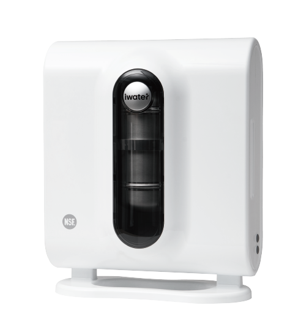

FIND YOUR FIT
我家能不能安裝？
三個問題，從家裡的用水開始。
免留聯絡資料，先看初步評估。

機身 36 × 41 × 16 cm。
管線、接頭與保養需另留空間。
答案保留於目前分頁，重新整理可繼續。照片不會保存或上傳。
評估說明與安裝資料
此工具整理安裝前需要確認的條件，不是施工核准。需依原水、管線、接頭、材質及維修空間由服務人員確認。
自來水環境仍需核對接頭與水壓。地下水、山泉水或其他特殊水源，需先評估水質與前置處理。
流理台上需保留料理空間；壁掛需確認承重與固定方式；櫥下或分接其他設備需另確認配置。
查看完整產品規格 →